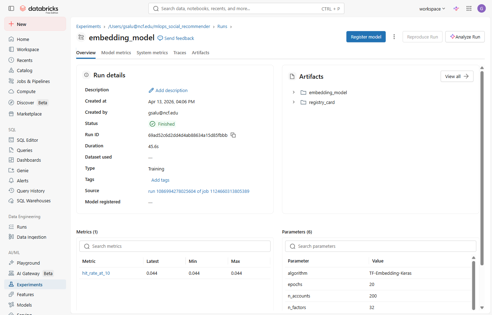
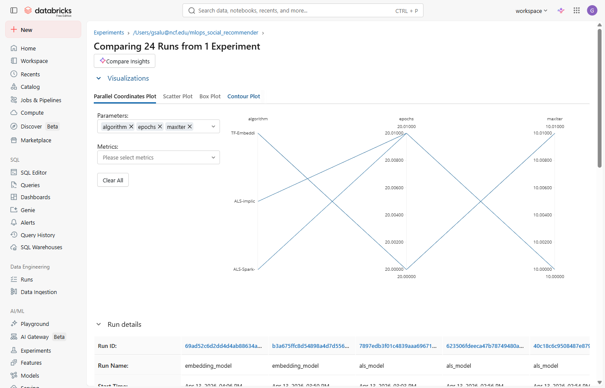

Lab 1 (mlops_lab.html) must be finished before starting this lab.
This notebook reads the feature table, holdout set, and ALS recommendation table created in Lab 1.
If those Delta tables do not exist in workspace.mlops, run Lab 1 first.
Notebook: Import nb_mlops_tf.py into your Databricks workspace.
Use serverless compute.
Time: ~30–40 minutes. TensorFlow install + restart (~2 min) + 20 epochs of training (~5 min).
The first cell installs TensorFlow. After the install the Python session restarts automatically — this is normal. Wait for the restart message, then run all remaining cells in order from the top.
TensorFlow is not pre-installed on Databricks serverless. The first cell installs it, which automatically restarts the Python session — this is expected and normal. After the restart message appears, run all cells again from the top in order.
Cell Install TensorFlow
%pip install -q "tensorflow>=2.16,<2.18"
Cell Configuration — derive N_USERS and N_ACCOUNTS from Lab 1
Unlike Lab 1, N_USERS and N_ACCOUNTS are not hardcoded. They are read
from the feature table so the embedding layers are exactly the right size for whatever data Lab 1 produced.
An embedding layer with size 17,000 that receives an index of 17,001 will crash — this prevents that.
N_FACTORS = 32 # embedding dimension — richer than ALS rank=20
N_REC = 10 # must match Lab 1
SCHEMA = "workspace.mlops"
_stats = spark.table(f"{SCHEMA}.mlops_features").agg(
F.max("user_id").alias("max_user"),
F.max("account_id").alias("max_acct")
).collect()[0]
N_USERS = int(_stats["max_user"]) + 1
N_ACCOUNTS = int(_stats["max_acct"]) + 1
Cell Verify Lab 1 tables exist
All three must show non-zero counts. If any are missing, run Lab 1 first.
for tbl in ["mlops_train", "mlops_holdout", "mlops_als_recs"]:
n = spark.table(f"{SCHEMA}.{tbl}").count()
print(f" {SCHEMA}.{tbl}: {n:,} rows")
%pip install cell. Wait for the automatic Python session restart — you will see
"Python interpreter restarted" in the output. This is expected.ALS factorized the interaction matrix algebraically in one step. The TF embedding model learns the same kind of user and account vectors through gradient descent — iterating over the data 20 times (epochs), nudging the vectors a little each time to reduce prediction error.
A two-tower model has two separate "towers" — one for users, one for items (accounts here). Each tower is just an Embedding layer: a lookup table that maps an integer ID to a dense vector. User 42 maps to a 32-dimensional vector; Account 7 maps to another 32-dimensional vector. During training those vectors are adjusted so that pairs that actually interacted end up pointing in the same direction. At inference time you score a user against all accounts by computing the dot product of their vectors — high dot product = strong recommendation.
This is conceptually identical to ALS. The difference is how the vectors are learned: ALS solves a least-squares problem in closed form; the TF model uses backpropagation and gradient descent.
Cell Negative sampling
The training table only contains real (positive) interactions. A model trained only on positives learns to output a high score for every input — it never sees a "no" to learn from. For each positive pair we sample one random pair that is not in the training set and label it 0.
known = set(zip(users_pos.tolist(), accts_pos.tolist()))
neg = []
while len(neg) < len(train_pd):
u, a = np.random.randint(0, N_USERS), np.random.randint(0, N_ACCOUNTS)
if (u, a) not in known: # only sample pairs with no real interaction
neg.append((u, a))
all_u = np.concatenate([users_pos, neg[:, 0]]) # positives + negatives
all_y = np.concatenate([labels_pos, np.zeros(len(neg), ...)]) # labels: score or 0
Cell Define the Keras model
The architecture in code. Each line corresponds to one layer in the two-tower diagram above.
ui = keras.Input(shape=(1,), name="user_id") ai = keras.Input(shape=(1,), name="account_id") # Tower 1: user embedding — N_USERS × N_FACTORS lookup table ue = keras.layers.Flatten()(keras.layers.Embedding(N_USERS, N_FACTORS, name="user_emb")(ui)) # Tower 2: account embedding — N_ACCOUNTS × N_FACTORS lookup table ae = keras.layers.Flatten()(keras.layers.Embedding(N_ACCOUNTS, N_FACTORS, name="acct_emb")(ai)) # Dot product → sigmoid → probability of interaction out = keras.layers.Dense(1, activation="sigmoid")(keras.layers.Dot(axes=1)([ue, ae])) tf_model = keras.Model(inputs=[ui, ai], outputs=out) tf_model.compile(optimizer="adam", loss="binary_crossentropy")
Cell Train inside an MLflow run
Training runs for 20 epochs. Loss should drop from ~0.69 (random) at epoch 1 toward ~0.35–0.45 by epoch 20.
The model and its parameters are logged inside the with mlflow.start_run() block — same
pattern as Lab 1's ALS run, just a different model.
with mlflow.start_run(run_name="embedding_model") as emb_run:
mlflow.log_params({"algorithm": "TF-Embedding-Keras",
"n_factors": N_FACTORS, "optimizer": "adam",
"epochs": 20, "n_users": N_USERS, "n_accounts": N_ACCOUNTS})
tf_model.fit([all_u, all_a], all_y,
epochs=20, batch_size=256, validation_split=0.1)
tf_model.save("/tmp/embedding_model_export.keras") # .keras = Keras 3 format
mlflow.pyfunc.log_model(artifact_path="embedding_model", ...)
After training — open Experiments in the left sidebar (under AI/ML), click mlops_social_recommender, then click the embedding_model row:

tf_model.summary() output. How many total parameters? The user embedding alone is
17,462 × 32 = 558,784. Compare that to ALS rank=20: 17,462 × 20 = 349,240. More parameters, more capacity — but does it help?n_factors, epochs, and optimizer are logged.The model scores every possible (user, account) pair in one batched call — no loop, no Spark,
just one matrix multiply on the driver. A Spark window function then keeps only the top-10 per user.
The same hit_rate() function from Lab 1 is used so the evaluation is identical.
Cell Score all user × account pairs
We build a grid of every possible pair using np.repeat and np.tile,
run a single batched predict() call, then write the top-10 per user to a Delta table.
# Build a full grid: all N_USERS × N_ACCOUNTS combinations
grid_u = np.repeat(np.arange(N_USERS, dtype="int32"), N_ACCOUNTS)
grid_a = np.tile( np.arange(N_ACCOUNTS, dtype="int32"), N_USERS)
# One batched forward pass through the model — returns a score per pair
scores = tf_model.predict([grid_u, grid_a], verbose=0).flatten()
# Keep top-10 per user using a Spark window function
emb_recs = (spark.createDataFrame(pd.DataFrame(
{"user_id": grid_u.astype(int),
"account_id": grid_a.astype(int), "score": scores.astype(float)}))
.withColumn("rnk", F.row_number().over(
Window.partitionBy("user_id").orderBy(F.desc("score"))))
.filter(F.col("rnk") <= N_REC).drop("rnk"))
emb_recs.write.mode("overwrite").saveAsTable(f"{SCHEMA}.mlops_emb_recs")
Cell Evaluate both models on the same holdout
als_hr = hit_rate(f"{SCHEMA}.mlops_als_recs")
emb_hr = hit_rate(f"{SCHEMA}.mlops_emb_recs")
with mlflow.start_run(run_id=emb_run_id):
mlflow.log_metric("hit_rate_at_10", emb_hr)
mlops_emb_recs
(17,462 × 10 = 174,620).Go to Experiments → mlops_social_recommender, check the box next to both
the als_model run and the embedding_model run, then click Compare.
Both models ran on identical data with an identical holdout evaluation. The numbers decide.
Both runs are on record. The comparison is reproducible by anyone with workspace access. No "I think my model is better" — the metric either crosses the bar or it doesn't. In a production team this comparison view is what you screenshot for the model review meeting.
Cell Model comparison and decision
print(f" ALS hit_rate@10 = {als_hr:.4f} (Lab 1, registered as v1)")
print(f" Embedding hit_rate@10 = {emb_hr:.4f} (Lab 2, this run)")
if emb_hr > als_hr:
print(f"TF embedding model wins by {emb_hr - als_hr:.4f}. Registering as v2.")
else:
print(f"ALS holds as champion. No new version registered.")
The MLflow Compare view — check both runs in the experiment table then click Compare. Your workspace will show the same layout with your actual hit rates:

als_model row and the embedding_model row. A Compare
button appears at the top — click it. You will see both runs' parameters and
hit_rate_at_10 side by side.If TF wins, the notebook attempts to register it as social_recommender v2.
If ALS holds, registration is skipped. The decision is automated and evidence-based —
the metric determined the outcome, not a person's opinion.
The champion is the model currently in production — the one serving real users. The challenger is a new model being evaluated. The challenger only gets promoted if it definitively beats the champion on a held-out test set.
This notebook implements the simplest version: one metric, one threshold (must be strictly greater). In production you might require the challenger to beat the champion by at least 1%, pass a latency test, and get sign-off from a human reviewer before promotion.
The key property: the old model is never deleted. Both versions remain in MLflow with full lineage — you can always roll back by redeploying v1.
Cell Register the winner (with free-tier fallback)
if emb_hr > als_hr:
model_uri = f"runs:/{emb_run_id}/embedding_model"
try:
reg = mlflow.register_model(model_uri, MODEL_NAME)
print(f"Registered: {MODEL_NAME} version={reg.version}")
except Exception as e:
# Free tier: IAM denies writes to the registry storage bucket
model_card = {
"model_name": MODEL_NAME,
"algorithm": "TF-Embedding-Keras",
"hit_rate_at_10": round(emb_hr, 4),
"als_hit_rate_at_10": round(als_hr, 4),
"decision": "TF wins — would register as social_recommender v2",
}
with mlflow.start_run(run_id=emb_run_id):
mlflow.log_artifact(card_path, "registry_card")
else:
print("ALS is still champion. No new version registered.")
registry_card/model_card.json and preview it.als_model and embedding_model runs in Experiments.Run the final notebook cell. Think through the full deployment pipeline:
@championmodels:/social_recommender@championSubmit three screenshots:
hit_rate_at_10 for both runsregistry_card/model_card.json artifact open in the winning run’s Artifacts tabN_FACTORS to 64. Retrain, re-evaluate, compare three runs.
Does the larger embedding space improve hit rate?@champion to the winning version.
Load it in a new cell: mlflow.pyfunc.load_model("models:/social_recommender@champion").
A serving endpoint uses exactly this call — no version number hardcoded.